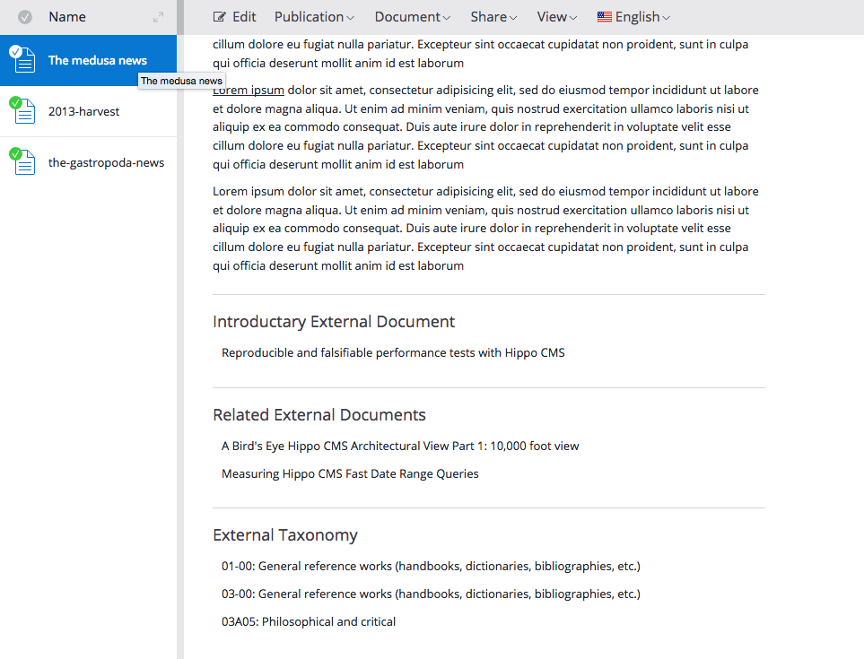
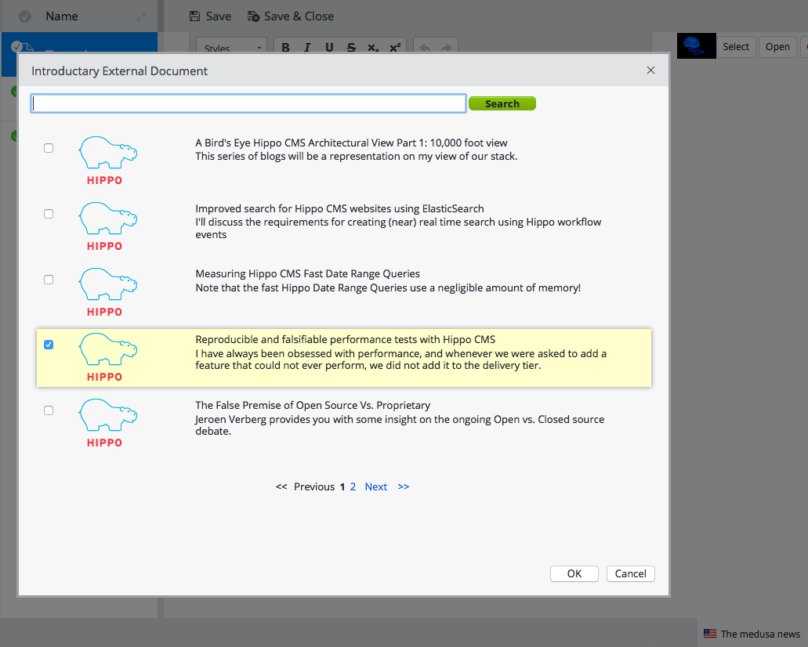
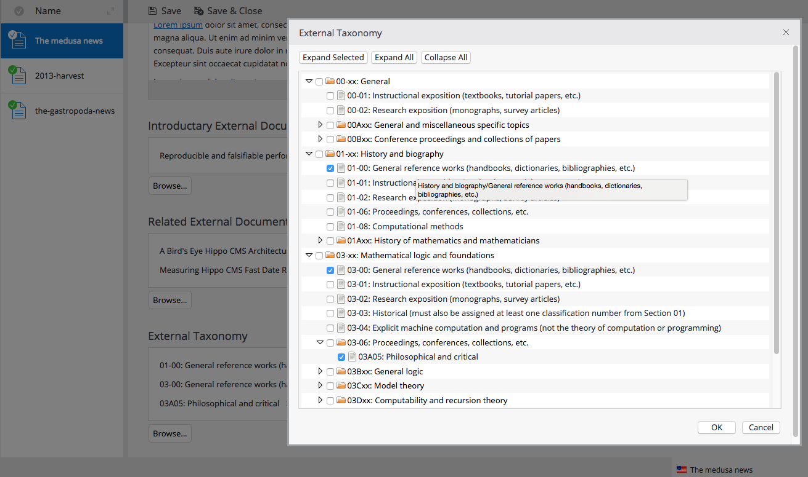
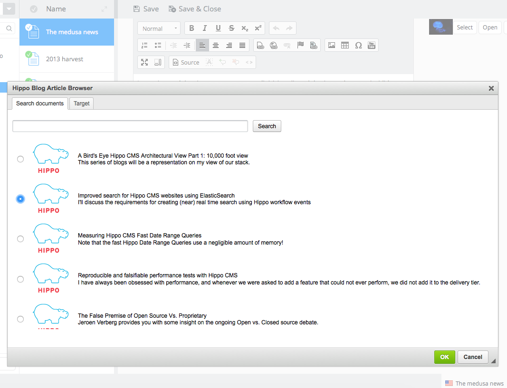
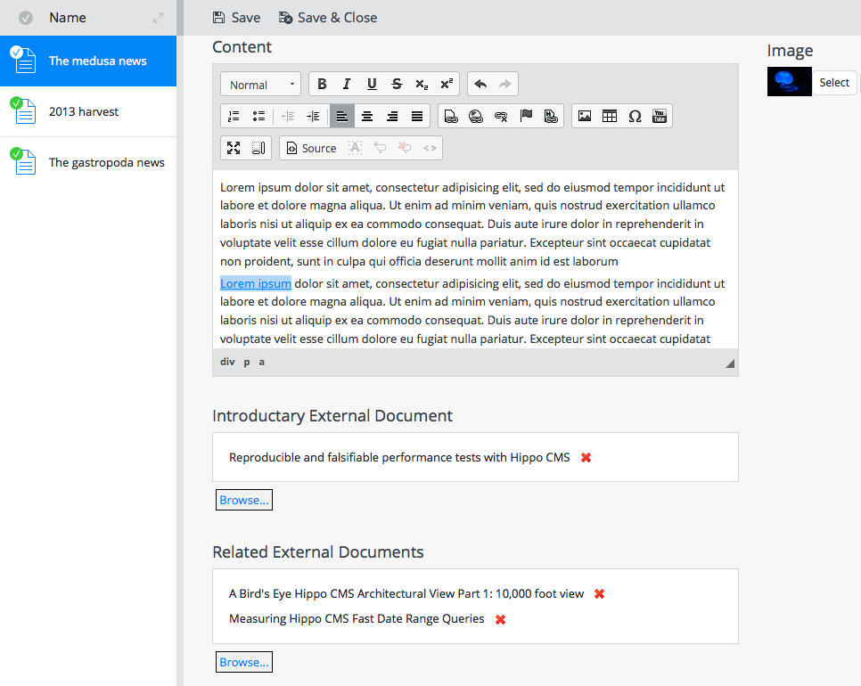

This project provides base external document picker plugins for Hippo CMS with simple example implementations for developer's references.
This project consists of two different external document pickers: one for External Document Field Picker and the other for External Link Picker Button in the RichText Editor.
External Document Field Picker allows developers to define their own domain specific models to search/select external document(s) for a field of a CMS document. Developers can simply use this forge module plugin class and configurations with injecting their own org.onehippo.forge.exdocpicker.api.ExternalDocumentServiceFacade implementation class.
External Document Field Picker may show either Flat List View or Tree List View for the backend data in the picker dialog, depending on configurations and implementations. If you want to show a Tree List View in the picker dialog instead of the default Flat List View, you need to use slightly different plugin configurations and your org.onehippo.forge.exdocpicker.api.ExternalDocumentServiceFacade implementation class must implement the three more operations defined in org.onehippo.forge.exdocpicker.api.ExternalDocumentTreeService additionally, in order to provide hierarchical information resolutions on the searched external backend data.
For detail, please see Architecture, Developers How-to (Flat List View) and Developers How-to (Tree List View) pages.
This plugin module allows developers to define their own domain specific models to search/select external document(s) in RichText Editor (CKEditor) fields through your own REST Services. Developers can simply add this forge module dependency and add extra CKEditor module configurations for RichText editor configuration(s).
For detail, please see Architecture and Developers How-to pages.
You can check out, build and run demo application from the demo submodule. It contains all the examples explained in this site documentation.
Here are example commands to check out, build and run demo application:
$ cd demo
$ mvn clean verify
$ mvn -P cargo.run
Visit http://localhost:8080/cms/.
Log on to the CMS application and open a news article document. You will see two fields referring to some external documents below. ('Introductory External Document' field and 'Related External Documents' field)
If you edit the document, then you will be able to click on 'Browse...' button for each field to see the following popup dialog. You can search and browse your domain specific external documents there based on your service class implementation. If you select external document(s) and click on the OK button, then the field will be set to those selected external documents.
If a field is configured to support Tree List View picker dialog mode, then the plugin may show a tree list view like the following on 'Browse...' button clicked. You can expand or collapse your domain specific external tree data there based on your service class implementation. If you select external tree item(s) and click on the OK button, then the field will be set to those selected external documents.
Log on to the CMS application and open a news article document to edit the "Content" RichText field. If you select a text and click on the "Link to Hippo Blog Articles" (next to "Anchor" button), then you will see the following popup dialog to search external documents.
If you select an item and click on OK button, then you will see the text linked with the external document information.
